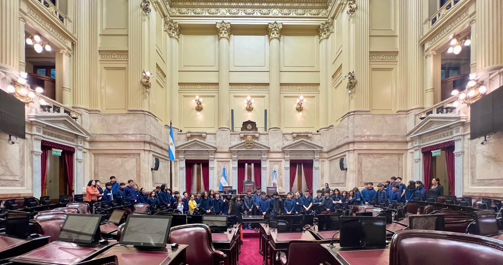

El día miércoles 18 de septiembre los alumnos de 3º A y B acompañados de sus profesoras Griselda Orellano, Claudia Iarlori, María Ana Rago y Florencia Bazzini realizaron una interesante visita al Congreso Nacional. A las 9.30 hs nos recibió la guía Micaela quien nos ilustró la visita dentro del mismo. Visitamos los recintos de ambas Cámaras (Senadores y Diputados) como así también los Salones Azul y Rosa Eva Perón y el de los Pasos Perdidos. La visita finalizó con una explicación de la Numismática del Museo del Congreso Nacional que se encuentra frente a la entrada principal frente a la Plaza de los dos Congresos, que sólo se utiliza para el ingreso del Presidente de la Nación para la apertura de las Sesiones Ordinarias del Congreso y cuando se recibe la visita de una persona de renombre como puede ser el Presidente de otro Estado que desee visitarla.
